01-home /
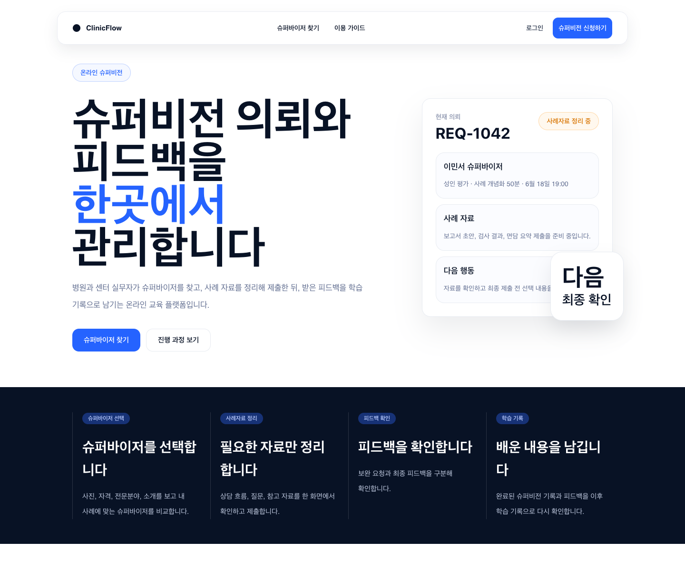
ClinicFlow 슈퍼바이저 찾기 이용 가이드 로그인 슈퍼비전 신청하기 온라인 슈퍼비전 슈퍼비전 의뢰와 피드백을 한곳에서 관리합니다 병원과 센터 실무자가 슈퍼바이저를 찾고, 사례 자료를 정리해 제출한 뒤, 받은 피드백을 학습 기록으로 남기는 온라인 교육 플랫폼입니다. 슈퍼바이저 찾기 진행 과정 보기 현재 의뢰 REQ-1042 사례자료 정리 중 이민서 슈퍼바이저 성인 평가 · 사례 개념화 50분 · 6월 18일 19:00 사례
02-login /login
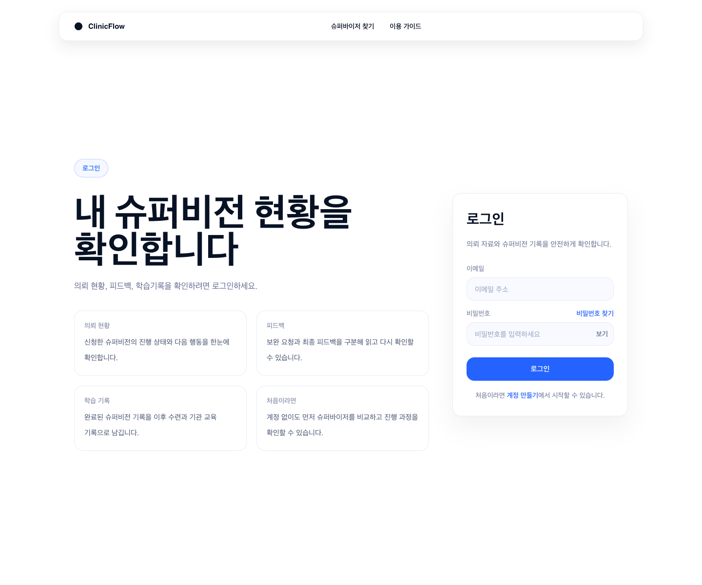
ClinicFlow 슈퍼바이저 찾기 이용 가이드 로그인 내 슈퍼비전 현황을 확인합니다 의뢰 현황, 피드백, 학습기록을 확인하려면 로그인하세요. 의뢰 현황 신청한 슈퍼비전의 진행 상태와 다음 행동을 한눈에 확인합니다. 피드백 보완 요청과 최종 피드백을 구분해 읽고 다시 확인할 수 있습니다. 학습 기록 완료된 슈퍼비전 기록을 이후 수련과 기관 교육 기록으로 남깁니다. 처음이라면 계정 없이도 먼저 슈퍼바이저를 비교하고 진행 과정을
03-signup /signup
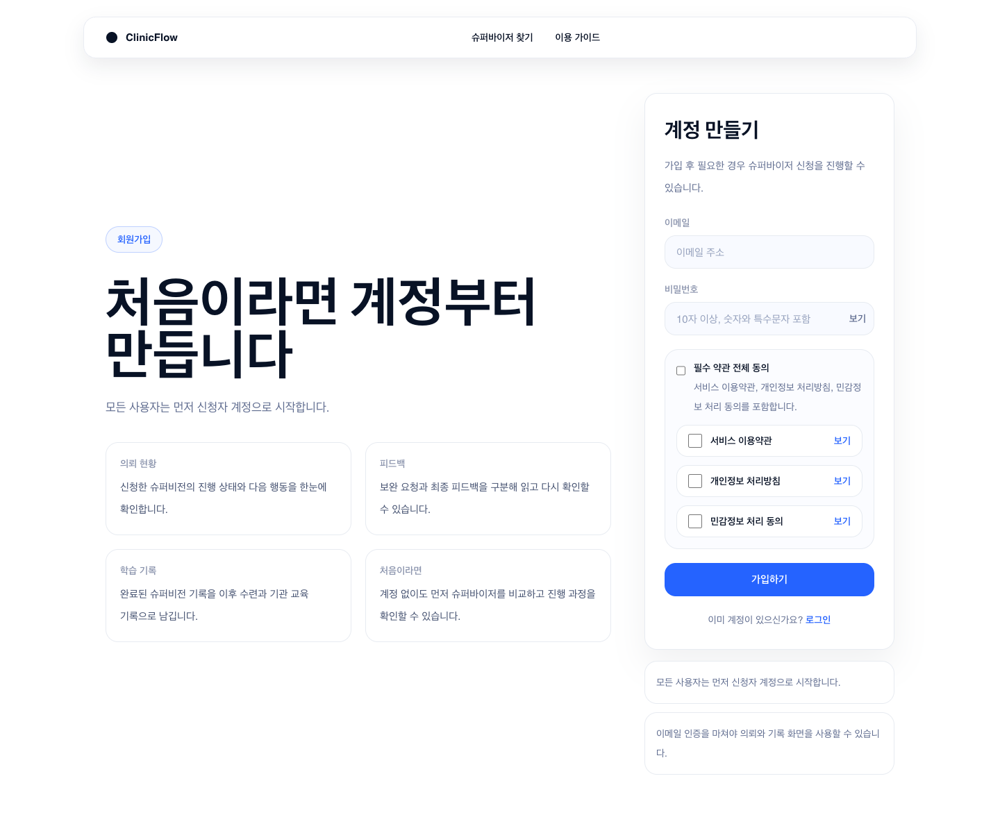
ClinicFlow 슈퍼바이저 찾기 이용 가이드 회원가입 처음이라면 계정부터 만듭니다 모든 사용자는 먼저 신청자 계정으로 시작합니다. 의뢰 현황 신청한 슈퍼비전의 진행 상태와 다음 행동을 한눈에 확인합니다. 피드백 보완 요청과 최종 피드백을 구분해 읽고 다시 확인할 수 있습니다. 학습 기록 완료된 슈퍼비전 기록을 이후 수련과 기관 교육 기록으로 남깁니다. 처음이라면 계정 없이도 먼저 슈퍼바이저를 비교하고 진행 과정을 확인할 수
04-forgot-password /forgot-password
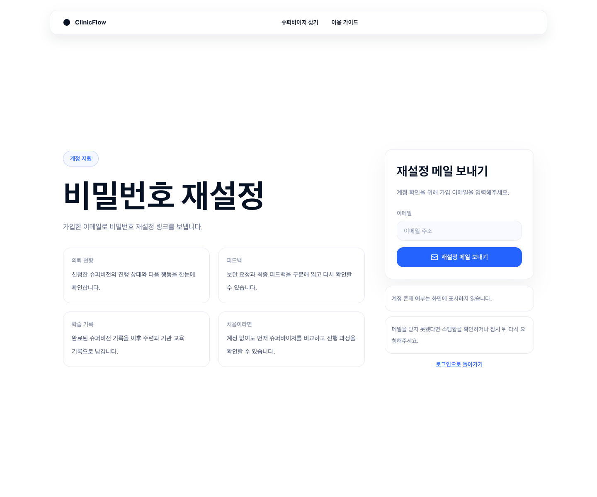
ClinicFlow 슈퍼바이저 찾기 이용 가이드 계정 지원 비밀번호 재설정 가입한 이메일로 비밀번호 재설정 링크를 보냅니다. 의뢰 현황 신청한 슈퍼비전의 진행 상태와 다음 행동을 한눈에 확인합니다. 피드백 보완 요청과 최종 피드백을 구분해 읽고 다시 확인할 수 있습니다. 학습 기록 완료된 슈퍼비전 기록을 이후 수련과 기관 교육 기록으로 남깁니다. 처음이라면 계정 없이도 먼저 슈퍼바이저를 비교하고 진행 과정을 확인할 수 있습니다
05-reset-password /reset-password
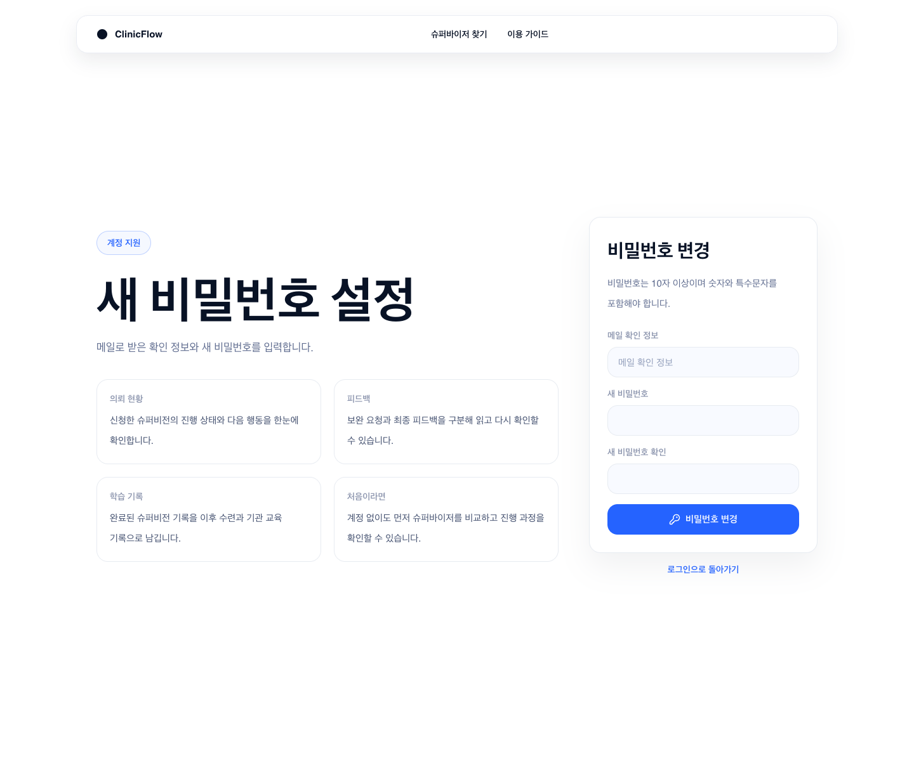
ClinicFlow 슈퍼바이저 찾기 이용 가이드 계정 지원 새 비밀번호 설정 메일로 받은 확인 정보와 새 비밀번호를 입력합니다. 의뢰 현황 신청한 슈퍼비전의 진행 상태와 다음 행동을 한눈에 확인합니다. 피드백 보완 요청과 최종 피드백을 구분해 읽고 다시 확인할 수 있습니다. 학습 기록 완료된 슈퍼비전 기록을 이후 수련과 기관 교육 기록으로 남깁니다. 처음이라면 계정 없이도 먼저 슈퍼바이저를 비교하고 진행 과정을 확인할 수 있습
06-email-verify /email/verify
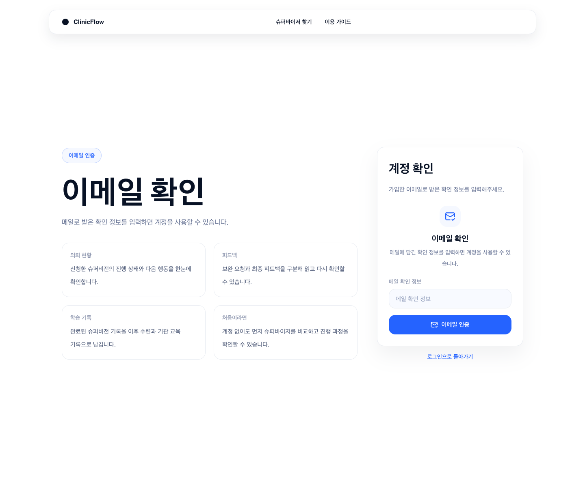
ClinicFlow 슈퍼바이저 찾기 이용 가이드 이메일 인증 이메일 확인 메일로 받은 확인 정보를 입력하면 계정을 사용할 수 있습니다. 의뢰 현황 신청한 슈퍼비전의 진행 상태와 다음 행동을 한눈에 확인합니다. 피드백 보완 요청과 최종 피드백을 구분해 읽고 다시 확인할 수 있습니다. 학습 기록 완료된 슈퍼비전 기록을 이후 수련과 기관 교육 기록으로 남깁니다. 처음이라면 계정 없이도 먼저 슈퍼바이저를 비교하고 진행 과정을 확인할
07-verify-email /verify-email

ClinicFlow 슈퍼바이저 찾기 이용 가이드 이메일 인증 이메일 확인 메일로 받은 확인 정보를 입력하면 계정을 사용할 수 있습니다. 의뢰 현황 신청한 슈퍼비전의 진행 상태와 다음 행동을 한눈에 확인합니다. 피드백 보완 요청과 최종 피드백을 구분해 읽고 다시 확인할 수 있습니다. 학습 기록 완료된 슈퍼비전 기록을 이후 수련과 기관 교육 기록으로 남깁니다. 처음이라면 계정 없이도 먼저 슈퍼바이저를 비교하고 진행 과정을 확인할
08-supervisors /supervisors
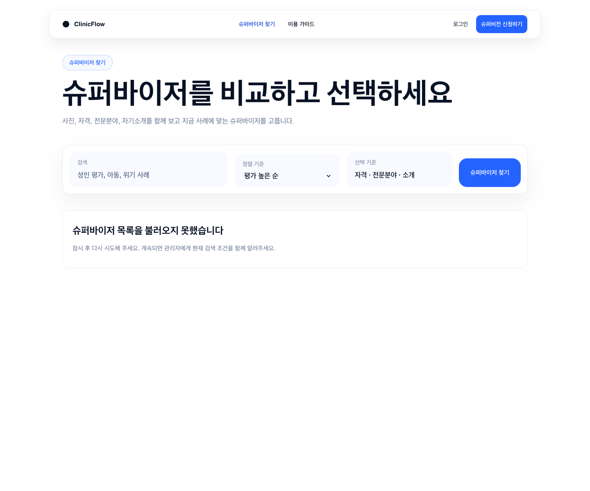
ClinicFlow 슈퍼바이저 찾기 이용 가이드 로그인 슈퍼비전 신청하기 슈퍼바이저 찾기 슈퍼바이저를 비교하고 선택하세요 사진, 자격, 전문분야, 자기소개를 함께 보고 지금 사례에 맞는 슈퍼바이저를 고릅니다. 검색 정렬 기준 평가 높은 순 응답 빠른 순 완료 많은 순 선택 기준 자격 · 전문분야 · 소개 슈퍼바이저 찾기 슈퍼바이저 목록을 불러오지 못했습니다 잠시 후 다시 시도해 주세요. 계속되면 관리자에게 현재 검색 조건을 함
09-supervisor-detail /supervisors/sample-supervisor
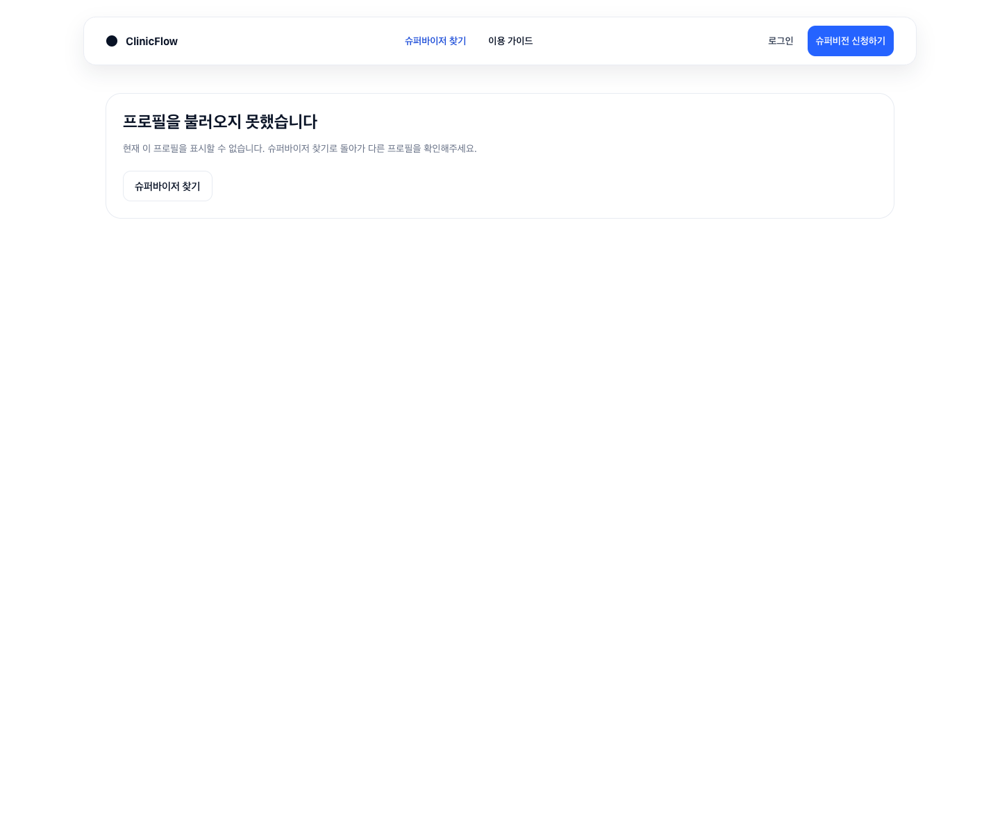
ClinicFlow 슈퍼바이저 찾기 이용 가이드 로그인 슈퍼비전 신청하기 프로필을 불러오지 못했습니다 현재 이 프로필을 표시할 수 없습니다. 슈퍼바이저 찾기로 돌아가 다른 프로필을 확인해주세요. 슈퍼바이저 찾기
10-guide /guide
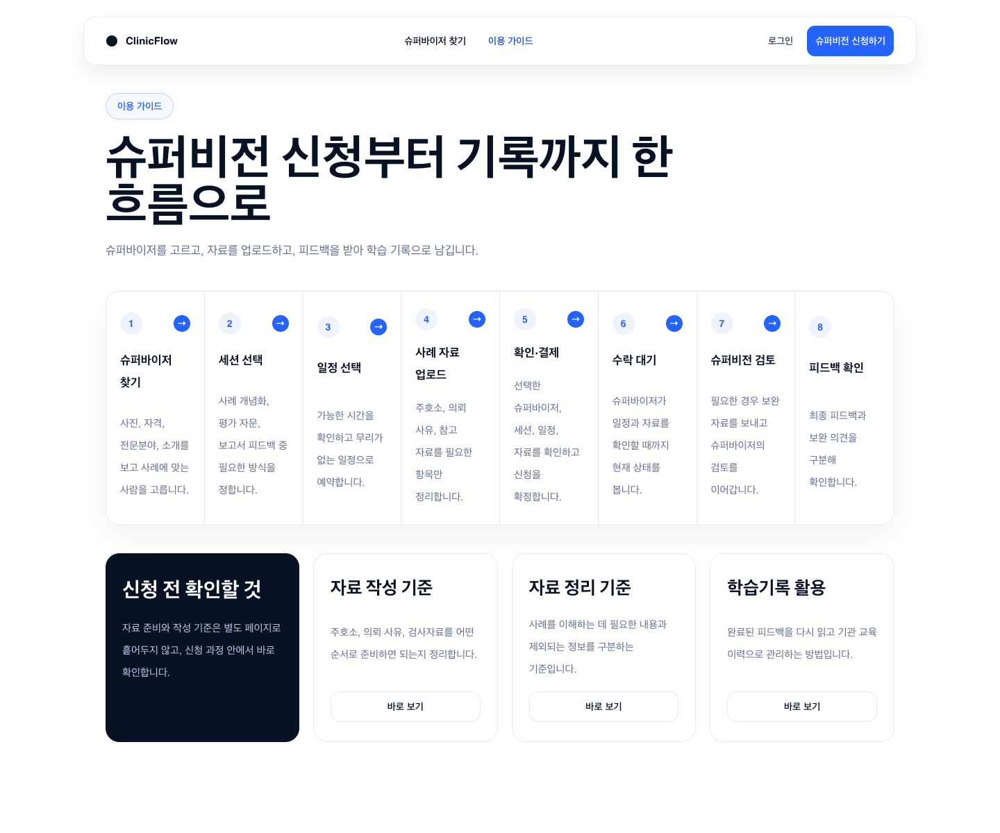
ClinicFlow 슈퍼바이저 찾기 이용 가이드 로그인 슈퍼비전 신청하기 이용 가이드 슈퍼비전 신청부터 기록까지 한 흐름으로 슈퍼바이저를 고르고, 자료를 업로드하고, 피드백을 받아 학습 기록으로 남깁니다. 1 → 슈퍼바이저 찾기 사진, 자격, 전문분야, 소개를 보고 사례에 맞는 사람을 고릅니다. 2 → 세션 선택 사례 개념화, 평가 자문, 보고서 피드백 중 필요한 방식을 정합니다. 3 → 일정 선택 가능한 시간을 확인하고 무리
11-resources /resources
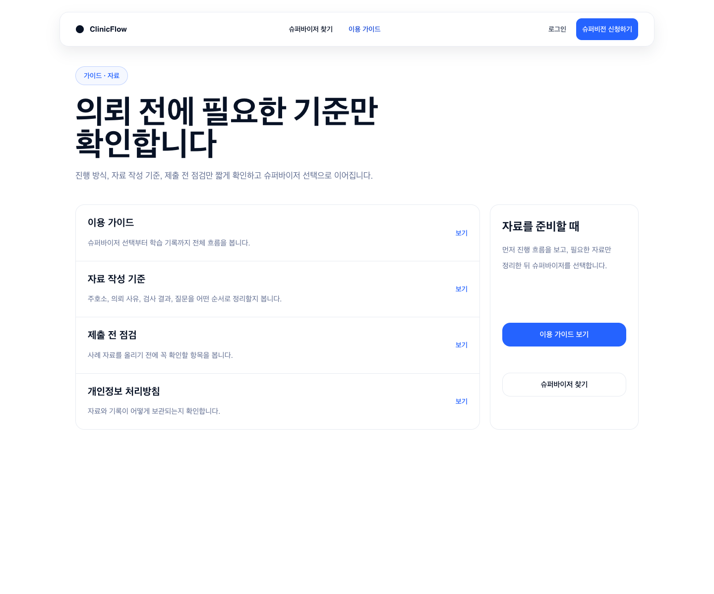
ClinicFlow 슈퍼바이저 찾기 이용 가이드 로그인 슈퍼비전 신청하기 가이드 · 자료 의뢰 전에 필요한 기준만 확인합니다 진행 방식, 자료 작성 기준, 제출 전 점검만 짧게 확인하고 슈퍼바이저 선택으로 이어집니다. 이용 가이드 슈퍼바이저 선택부터 학습 기록까지 전체 흐름을 봅니다. 보기 자료 작성 기준 주호소, 의뢰 사유, 검사 결과, 질문을 어떤 순서로 정리할지 봅니다. 보기 제출 전 점검 사례 자료를 올리기 전에 꼭 확
12-clinical-guidelines /clinical-guidelines
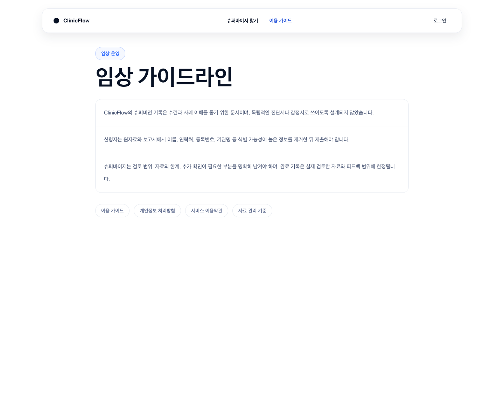
ClinicFlow 슈퍼바이저 찾기 이용 가이드 로그인 임상 운영 임상 가이드라인 ClinicFlow의 슈퍼비전 기록은 수련과 사례 이해를 돕기 위한 문서이며, 독립적인 진단서나 감정서로 쓰이도록 설계되지 않았습니다. 신청자는 원자료와 보고서에서 이름, 연락처, 등록번호, 기관명 등 식별 가능성이 높은 정보를 제거한 뒤 제출해야 합니다. 슈퍼바이저는 검토 범위, 자료의 한계, 추가 확인이 필요한 부분을 명확히 남겨야 하며, 완
13-terms /terms
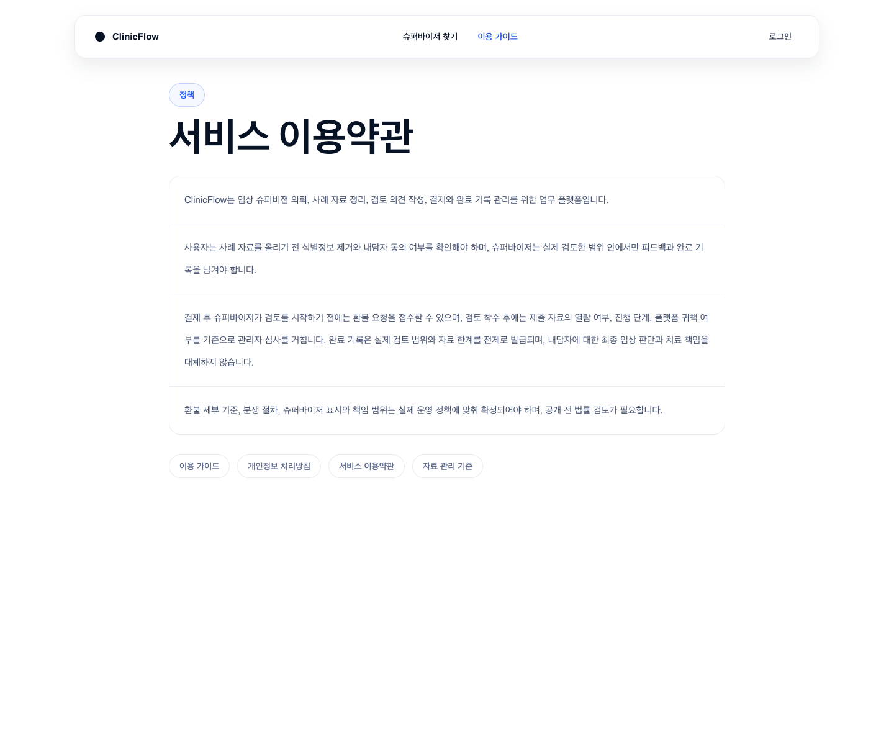
ClinicFlow 슈퍼바이저 찾기 이용 가이드 로그인 정책 서비스 이용약관 ClinicFlow는 임상 슈퍼비전 의뢰, 사례 자료 정리, 검토 의견 작성, 결제와 완료 기록 관리를 위한 업무 플랫폼입니다. 사용자는 사례 자료를 올리기 전 식별정보 제거와 내담자 동의 여부를 확인해야 하며, 슈퍼바이저는 실제 검토한 범위 안에서만 피드백과 완료 기록을 남겨야 합니다. 결제 후 슈퍼바이저가 검토를 시작하기 전에는 환불 요청을 접수할
14-privacy /privacy
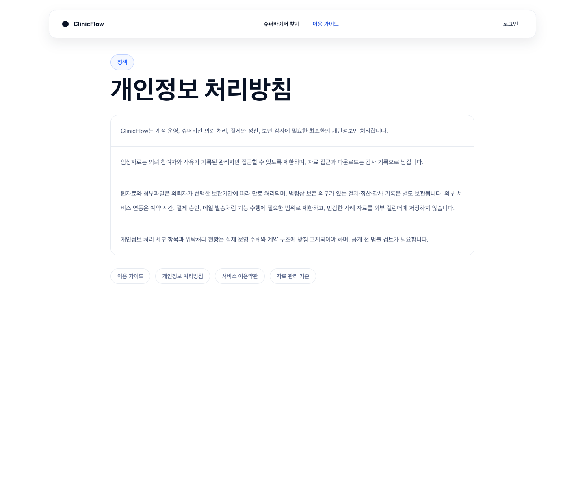
ClinicFlow 슈퍼바이저 찾기 이용 가이드 로그인 정책 개인정보 처리방침 ClinicFlow는 계정 운영, 슈퍼비전 의뢰 처리, 결제와 정산, 보안 감사에 필요한 최소한의 개인정보만 처리합니다. 임상자료는 의뢰 참여자와 사유가 기록된 관리자만 접근할 수 있도록 제한하며, 자료 접근과 다운로드는 감사 기록으로 남깁니다. 원자료와 첨부파일은 의뢰자가 선택한 보관기간에 따라 만료 처리되며, 법령상 보존 의무가 있는 결제·정산·
15-security /security
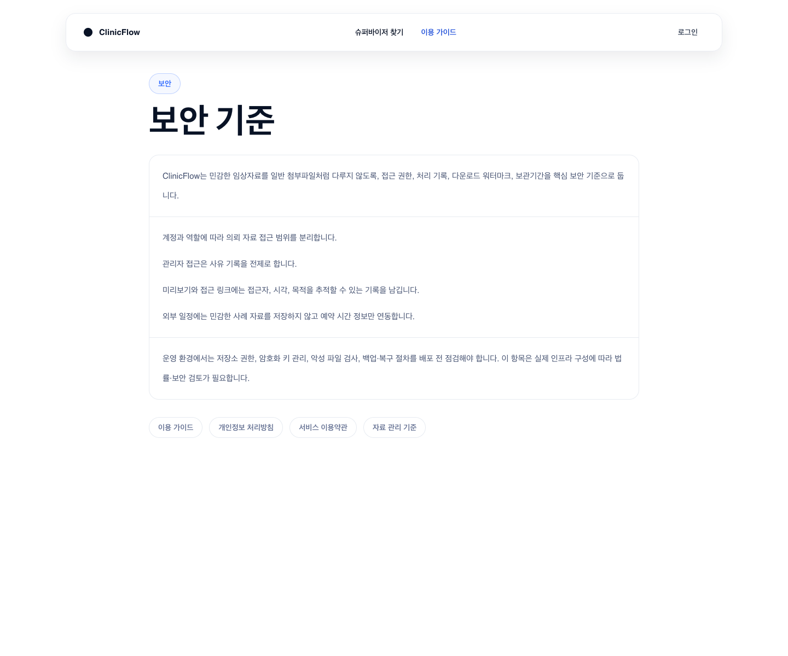
ClinicFlow 슈퍼바이저 찾기 이용 가이드 로그인 보안 보안 기준 ClinicFlow는 민감한 임상자료를 일반 첨부파일처럼 다루지 않도록, 접근 권한, 처리 기록, 다운로드 워터마크, 보관기간을 핵심 보안 기준으로 둡니다. 계정과 역할에 따라 의뢰 자료 접근 범위를 분리합니다. 관리자 접근은 사유 기록을 전제로 합니다. 미리보기와 접근 링크에는 접근자, 시각, 목적을 추적할 수 있는 기록을 남깁니다. 외부 일정에는 민감한
16-sensitive-consent /sensitive-consent
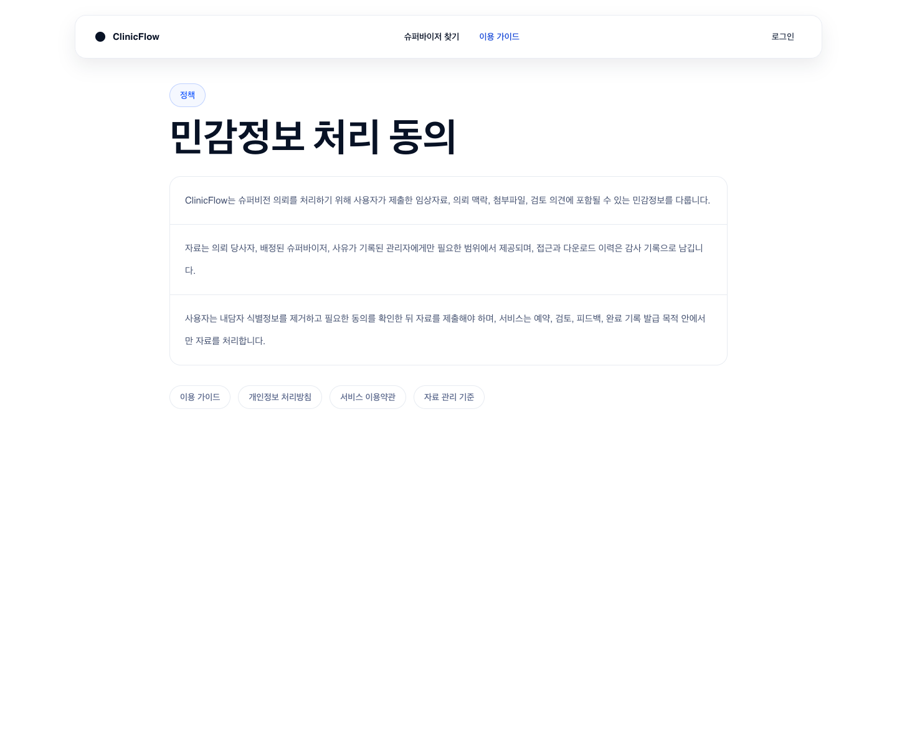
ClinicFlow 슈퍼바이저 찾기 이용 가이드 로그인 정책 민감정보 처리 동의 ClinicFlow는 슈퍼비전 의뢰를 처리하기 위해 사용자가 제출한 임상자료, 의뢰 맥락, 첨부파일, 검토 의견에 포함될 수 있는 민감정보를 다룹니다. 자료는 의뢰 당사자, 배정된 슈퍼바이저, 사유가 기록된 관리자에게만 필요한 범위에서 제공되며, 접근과 다운로드 이력은 감사 기록으로 남깁니다. 사용자는 내담자 식별정보를 제거하고 필요한 동의를 확인
17-requests /requests
ClinicFlow 슈퍼바이저 찾기 이용 가이드 내 슈퍼비전 의뢰 이 화면은 로그인 후 실제 의뢰와 기록을 기준으로 표시됩니다. 계정 확인 내 슈퍼비전 흐름으로 들어갑니다 계정으로 들어오면 진행 중인 슈퍼비전과 다음 행동을 확인할 수 있습니다. 로그인하기 로그인 후 확인 진행 중인 의뢰 상태와 다음 행동 사례 자료 업로드와 보완 요청 학습 기록 완료된 슈퍼비전 기록
18-request-new /requests/new
ClinicFlow 슈퍼바이저 찾기 이용 가이드 새 슈퍼비전 의뢰 이 화면은 로그인 후 실제 의뢰와 기록을 기준으로 표시됩니다. 계정 확인 내 슈퍼비전 흐름으로 들어갑니다 계정으로 들어오면 진행 중인 슈퍼비전과 다음 행동을 확인할 수 있습니다. 로그인하기 로그인 후 확인 진행 중인 의뢰 상태와 다음 행동 사례 자료 업로드와 보완 요청 학습 기록 완료된 슈퍼비전 기록
19-request-detail /requests/sample-request
ClinicFlow 슈퍼바이저 찾기 이용 가이드 의뢰 상세 이 화면은 로그인 후 실제 의뢰와 기록을 기준으로 표시됩니다. 계정 확인 내 슈퍼비전 흐름으로 들어갑니다 계정으로 들어오면 진행 중인 슈퍼비전과 다음 행동을 확인할 수 있습니다. 로그인하기 로그인 후 확인 진행 중인 의뢰 상태와 다음 행동 사례 자료 업로드와 보완 요청 학습 기록 완료된 슈퍼비전 기록
20-case-archive /case-archive
ClinicFlow 슈퍼바이저 찾기 이용 가이드 학습 기록 이 화면은 로그인 후 실제 의뢰와 기록을 기준으로 표시됩니다. 계정 확인 내 슈퍼비전 흐름으로 들어갑니다 계정으로 들어오면 진행 중인 슈퍼비전과 다음 행동을 확인할 수 있습니다. 로그인하기 로그인 후 확인 진행 중인 의뢰 상태와 다음 행동 사례 자료 업로드와 보완 요청 학습 기록 완료된 슈퍼비전 기록
21-payments /payments
ClinicFlow 슈퍼바이저 찾기 이용 가이드 결제 내역 이 화면은 로그인 후 실제 의뢰와 기록을 기준으로 표시됩니다. 계정 확인 내 슈퍼비전 흐름으로 들어갑니다 계정으로 들어오면 진행 중인 슈퍼비전과 다음 행동을 확인할 수 있습니다. 로그인하기 로그인 후 확인 진행 중인 의뢰 상태와 다음 행동 사례 자료 업로드와 보완 요청 학습 기록 완료된 슈퍼비전 기록
22-payment-detail /payments/sample-payment
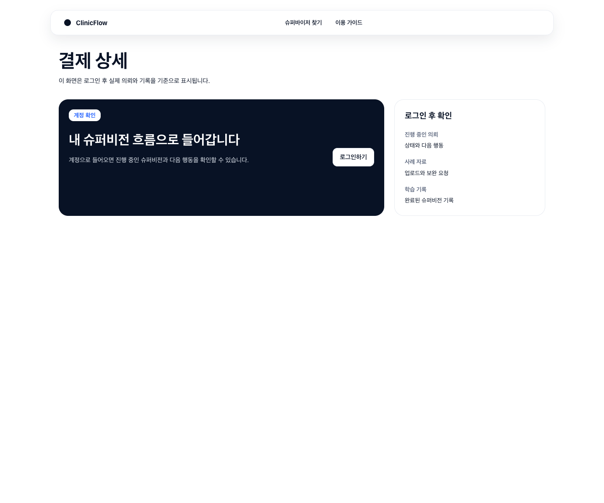
ClinicFlow 슈퍼바이저 찾기 이용 가이드 결제 상세 이 화면은 로그인 후 실제 의뢰와 기록을 기준으로 표시됩니다. 계정 확인 내 슈퍼비전 흐름으로 들어갑니다 계정으로 들어오면 진행 중인 슈퍼비전과 다음 행동을 확인할 수 있습니다. 로그인하기 로그인 후 확인 진행 중인 의뢰 상태와 다음 행동 사례 자료 업로드와 보완 요청 학습 기록 완료된 슈퍼비전 기록
23-payment-confirm /payments/confirm
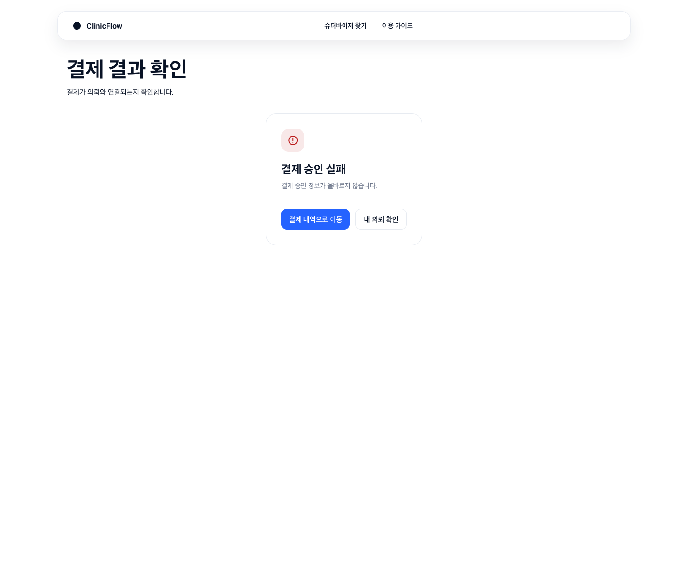
ClinicFlow 슈퍼바이저 찾기 이용 가이드 결제 결과 확인 결제가 의뢰와 연결되는지 확인합니다. error 결제 승인 실패 결제 승인 정보가 올바르지 않습니다. 결제 내역으로 이동 내 의뢰 확인
24-notifications /notifications
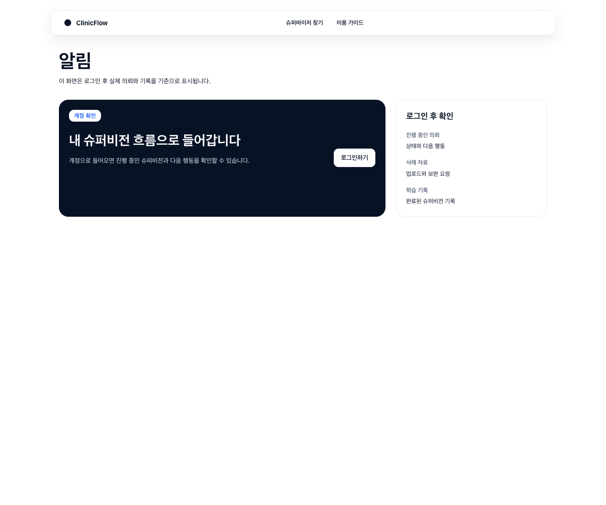
ClinicFlow 슈퍼바이저 찾기 이용 가이드 알림 이 화면은 로그인 후 실제 의뢰와 기록을 기준으로 표시됩니다. 계정 확인 내 슈퍼비전 흐름으로 들어갑니다 계정으로 들어오면 진행 중인 슈퍼비전과 다음 행동을 확인할 수 있습니다. 로그인하기 로그인 후 확인 진행 중인 의뢰 상태와 다음 행동 사례 자료 업로드와 보완 요청 학습 기록 완료된 슈퍼비전 기록
25-settings /settings
ClinicFlow 슈퍼바이저 찾기 이용 가이드 계정 설정 이 화면은 로그인 후 실제 의뢰와 기록을 기준으로 표시됩니다. 계정 확인 내 슈퍼비전 흐름으로 들어갑니다 계정으로 들어오면 진행 중인 슈퍼비전과 다음 행동을 확인할 수 있습니다. 로그인하기 로그인 후 확인 진행 중인 의뢰 상태와 다음 행동 사례 자료 업로드와 보완 요청 학습 기록 완료된 슈퍼비전 기록
26-me /me

ClinicFlow 슈퍼바이저 찾기 이용 가이드 로그인 내 슈퍼비전 현황을 확인합니다 의뢰 현황, 피드백, 학습기록을 확인하려면 로그인하세요. 의뢰 현황 신청한 슈퍼비전의 진행 상태와 다음 행동을 한눈에 확인합니다. 피드백 보완 요청과 최종 피드백을 구분해 읽고 다시 확인할 수 있습니다. 학습 기록 완료된 슈퍼비전 기록을 이후 수련과 기관 교육 기록으로 남깁니다. 처음이라면 계정 없이도 먼저 슈퍼바이저를 비교하고 진행 과정을
27-supervisor-home /supervisor
ClinicFlow 슈퍼바이저 찾기 이용 가이드 슈퍼바이저 업무 이 화면은 로그인 후 실제 의뢰와 기록을 기준으로 표시됩니다. 계정 확인 내 슈퍼비전 흐름으로 들어갑니다 계정으로 들어오면 진행 중인 슈퍼비전과 다음 행동을 확인할 수 있습니다. 로그인하기 로그인 후 확인 진행 중인 의뢰 상태와 다음 행동 사례 자료 업로드와 보완 요청 학습 기록 완료된 슈퍼비전 기록
28-supervisor-requests /supervisor/requests
ClinicFlow 슈퍼바이저 찾기 이용 가이드 검토할 의뢰 이 화면은 로그인 후 실제 의뢰와 기록을 기준으로 표시됩니다. 계정 확인 내 슈퍼비전 흐름으로 들어갑니다 계정으로 들어오면 진행 중인 슈퍼비전과 다음 행동을 확인할 수 있습니다. 로그인하기 로그인 후 확인 진행 중인 의뢰 상태와 다음 행동 사례 자료 업로드와 보완 요청 학습 기록 완료된 슈퍼비전 기록
29-supervisor-request-detail /supervisor/requests/sample-request
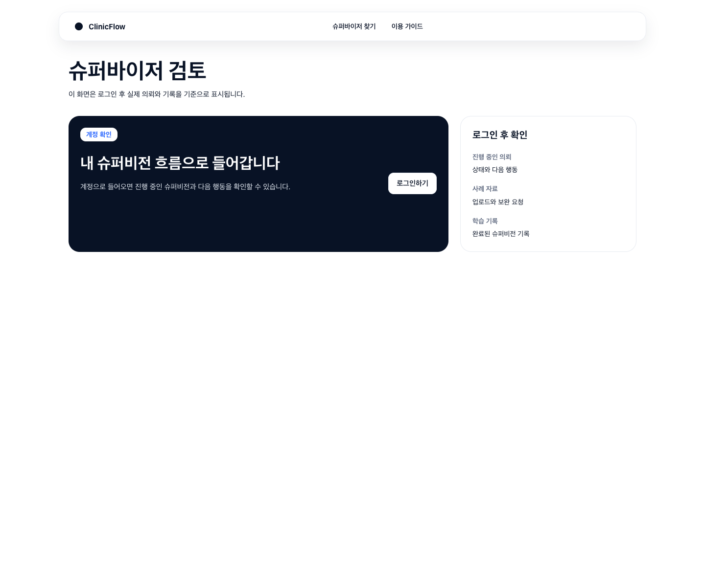
ClinicFlow 슈퍼바이저 찾기 이용 가이드 슈퍼바이저 검토 이 화면은 로그인 후 실제 의뢰와 기록을 기준으로 표시됩니다. 계정 확인 내 슈퍼비전 흐름으로 들어갑니다 계정으로 들어오면 진행 중인 슈퍼비전과 다음 행동을 확인할 수 있습니다. 로그인하기 로그인 후 확인 진행 중인 의뢰 상태와 다음 행동 사례 자료 업로드와 보완 요청 학습 기록 완료된 슈퍼비전 기록
30-supervisor-profile /supervisor/profile
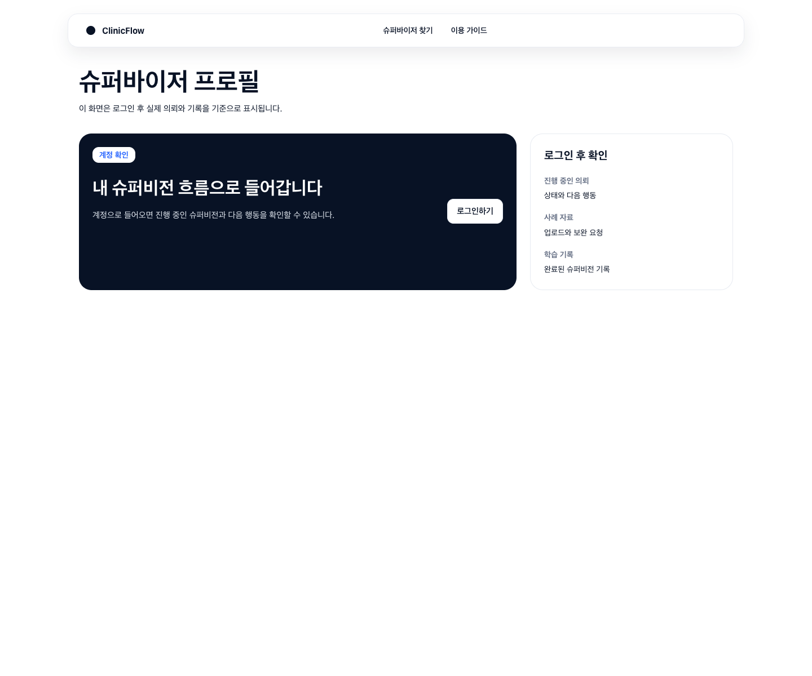
ClinicFlow 슈퍼바이저 찾기 이용 가이드 슈퍼바이저 프로필 이 화면은 로그인 후 실제 의뢰와 기록을 기준으로 표시됩니다. 계정 확인 내 슈퍼비전 흐름으로 들어갑니다 계정으로 들어오면 진행 중인 슈퍼비전과 다음 행동을 확인할 수 있습니다. 로그인하기 로그인 후 확인 진행 중인 의뢰 상태와 다음 행동 사례 자료 업로드와 보완 요청 학습 기록 완료된 슈퍼비전 기록
31-supervisor-availability /supervisor/availability
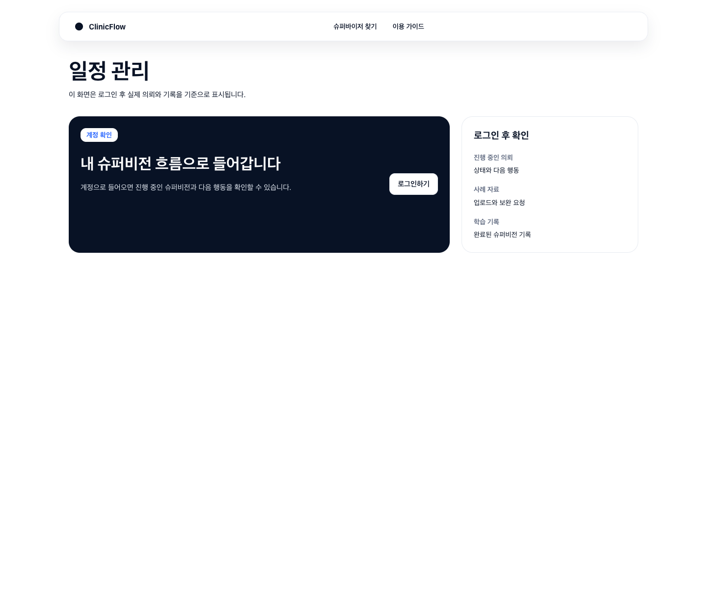
ClinicFlow 슈퍼바이저 찾기 이용 가이드 일정 관리 이 화면은 로그인 후 실제 의뢰와 기록을 기준으로 표시됩니다. 계정 확인 내 슈퍼비전 흐름으로 들어갑니다 계정으로 들어오면 진행 중인 슈퍼비전과 다음 행동을 확인할 수 있습니다. 로그인하기 로그인 후 확인 진행 중인 의뢰 상태와 다음 행동 사례 자료 업로드와 보완 요청 학습 기록 완료된 슈퍼비전 기록
32-supervisor-products /supervisor/products
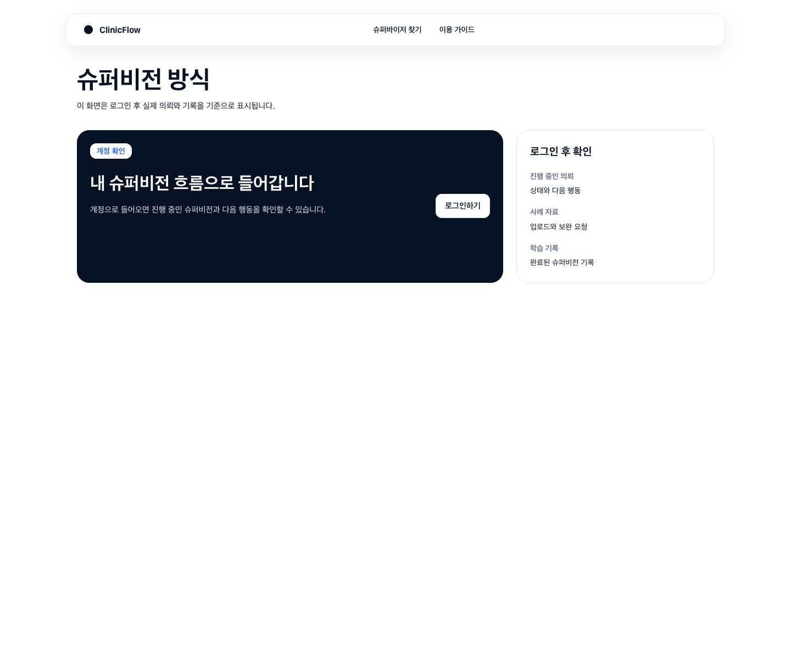
ClinicFlow 슈퍼바이저 찾기 이용 가이드 슈퍼비전 방식 이 화면은 로그인 후 실제 의뢰와 기록을 기준으로 표시됩니다. 계정 확인 내 슈퍼비전 흐름으로 들어갑니다 계정으로 들어오면 진행 중인 슈퍼비전과 다음 행동을 확인할 수 있습니다. 로그인하기 로그인 후 확인 진행 중인 의뢰 상태와 다음 행동 사례 자료 업로드와 보완 요청 학습 기록 완료된 슈퍼비전 기록
33-supervisor-payouts /supervisor/payouts
ClinicFlow 슈퍼바이저 찾기 이용 가이드 정산 내역 이 화면은 로그인 후 실제 의뢰와 기록을 기준으로 표시됩니다. 계정 확인 내 슈퍼비전 흐름으로 들어갑니다 계정으로 들어오면 진행 중인 슈퍼비전과 다음 행동을 확인할 수 있습니다. 로그인하기 로그인 후 확인 진행 중인 의뢰 상태와 다음 행동 사례 자료 업로드와 보완 요청 학습 기록 완료된 슈퍼비전 기록
34-supervisor-memory /supervisor/memory
ClinicFlow 슈퍼바이저 찾기 이용 가이드 기록 폴더 이 화면은 로그인 후 실제 의뢰와 기록을 기준으로 표시됩니다. 계정 확인 내 슈퍼비전 흐름으로 들어갑니다 계정으로 들어오면 진행 중인 슈퍼비전과 다음 행동을 확인할 수 있습니다. 로그인하기 로그인 후 확인 진행 중인 의뢰 상태와 다음 행동 사례 자료 업로드와 보완 요청 학습 기록 완료된 슈퍼비전 기록
35-supervisor-qualifications /supervisor/qualifications
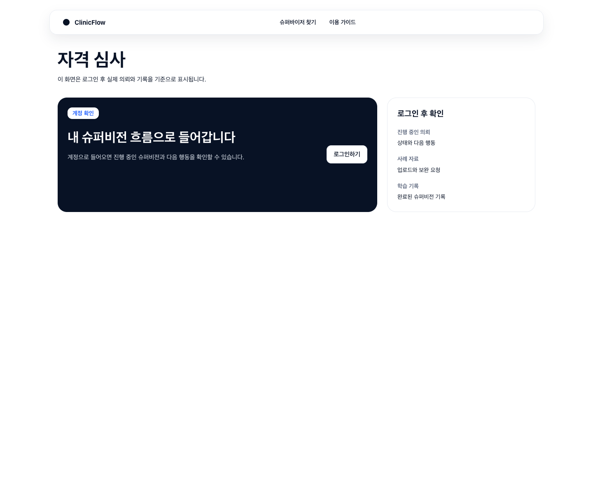
ClinicFlow 슈퍼바이저 찾기 이용 가이드 자격 심사 이 화면은 로그인 후 실제 의뢰와 기록을 기준으로 표시됩니다. 계정 확인 내 슈퍼비전 흐름으로 들어갑니다 계정으로 들어오면 진행 중인 슈퍼비전과 다음 행동을 확인할 수 있습니다. 로그인하기 로그인 후 확인 진행 중인 의뢰 상태와 다음 행동 사례 자료 업로드와 보완 요청 학습 기록 완료된 슈퍼비전 기록